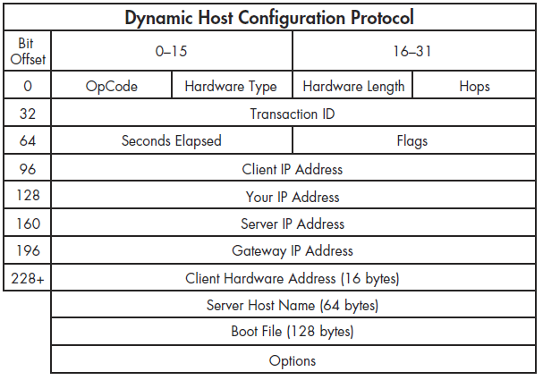

Implementing DHCP on Junos
NVIDIA crashing on Linux
Technical
Experience
Industry
Februrary 2018
March 2018
April 2018
May 2018
29 April 2018 | Engineering
In this blog post, I will present a tutorial on how to implement a DHCP server on a Juniper firewall using its
built-in Junos operating system. If you haven't done so yet, please read my blog post on
Juniper operating system as this blog post builds up on that topic. You will need to access the
configure mode of Junos for this tutorial. Before we begin implementing the server, let's talk about what DHCP
is. DHCP stands for Dynamic Host Configuration Protocol. It is used in a computer network to assign IP addresses
to devices connected to the server. To understand this, think of an individual computer in a networked system as
a client. When the client has been configured to request an IP address, it will send a DHCP packet across the network
assuming there is a DHCP server present. This packet is the client saying "hello I need an IP address". It will
keep this up continuously until a DHCP server receives the request and sends the client an IP address. The server
will need to know the mac address of the client in order to know where the request came from to assign accordingly.
It is also possible to obtain specific IP addresses using a static IP lookup table that maps to given mac
addresses. In this case, the server will look into this table to see if the mac address it received a DHCP packet
from is mapped to a specific IP address that is needed. Otherwise, an IP pool (range of usable IP addresses) will
be looked into and one that is available will be assigned to the device assuming that the IP pool has been properly
configured. It is important to note that incorrectly configured IP addresses can result in network errors so please
choose your assignable IP addresses wisely. The packet looks like the following:

When configuring a DHCP server in Junos, things you need are the IP pool, the lease time, and optionally a static IP
table if you plan to assign specific IP addresses to specific devices. In configure mode, you will need to enter
the following commands:
Your config file should look like the following:
Be sure to commit your configurations. You can also verify that DHCP is configured using the following commands in operational mode to see if you get the corresponding output:
Note that you can also configure DHCP in J-Web under "DHCP Server" or directly edit the config file. To check whether DHCP is actually assigning IP addreses, plug in a computer with its IP set to auto and check to see if it aquires in IP address.
# enable a specific port for DHCP
set interfaces ge-0/0/2 unit 0 family inet address 192.168.2.1/24
# map interface to a group
set system services dhcp-local-server group g1 interface ge-0/0/2.0
# set IP pools low and high
set access address-assignment pool p1 family inet network 192.168.2.0/24
set access address-assignment pool p1 family inet range r1 low 192.168.2.2
set access address-assignment pool p1 family inet range r1 high 192.168.2.254
# set lease time and specify IP of DHCP
set access address-assignment pool p1 family inet dhcp-attributes maximum-lease-time 2419200
set access address-assignment pool p1 family inet dhcp-attributes name-server 192.168.10.2
# optionally create static IP table for specific address assignments
set system services static-binding 01:03:05:07:09:0B fixed-address 192.168.2.50
set interfaces ge-0/0/2 unit 0 family inet address 192.168.2.1/24
# map interface to a group
set system services dhcp-local-server group g1 interface ge-0/0/2.0
# set IP pools low and high
set access address-assignment pool p1 family inet network 192.168.2.0/24
set access address-assignment pool p1 family inet range r1 low 192.168.2.2
set access address-assignment pool p1 family inet range r1 high 192.168.2.254
# set lease time and specify IP of DHCP
set access address-assignment pool p1 family inet dhcp-attributes maximum-lease-time 2419200
set access address-assignment pool p1 family inet dhcp-attributes name-server 192.168.10.2
# optionally create static IP table for specific address assignments
set system services static-binding 01:03:05:07:09:0B fixed-address 192.168.2.50
Your config file should look like the following:
pool p1 {
family inet {
network 192.168.2.0/24;
range r1 {
low 192.168.2.2;
high 192.168.2.254;
}
dhcp-attributes {
maximum-lease-time 2419200;
name-server {
192.168.10.2;
}
}
}
}
}
family inet {
network 192.168.2.0/24;
range r1 {
low 192.168.2.2;
high 192.168.2.254;
}
dhcp-attributes {
maximum-lease-time 2419200;
name-server {
192.168.10.2;
}
}
}
}
}
Be sure to commit your configurations. You can also verify that DHCP is configured using the following commands in operational mode to see if you get the corresponding output:
show dhcp server binding
IP Address Hardware Address Type Lease expires at
30.1.1.20 00:12:1e:a9:7b:81 dynamic 2007-05-11 11:14:43 PDT
show dhcp server binding address detail
IP address 192.0.2.2
Hardware address 00:a0:12:00:13:02
Pool 192.0.2.0/24
Interface fe-0/0/0, relayed by 192.0.2.200
Lease information:
Type DHCP
Obtained at 2004-05-02 13:01:42 PDT
Expires at 2004-05-03 13:01:42 PDT
State active
DHCP options:
Name: name-server, Value: { 6.6.6.6, 6.6.6.7 }
Name: domain-name, Value: mydomain.tld
Code: 32, Type: ip-address, Value: 192.0.2.33
show dhcp server statistics Packets dropped:
Total 0
Messages received:
BOOTREQUEST 45
DHCPDECLINE 0
DHCPDISCOVER 1
DHCPINFORM 39
DHCPRELEASE 0
DHCPREQUEST 5
DHCPLEASEQUERY 0
DHCPBULKLEASEQUERY 0
Messages sent:
BOOTREPLY 6
DHCPOFFER 1
DHCPACK 3
DHCPNAK 2
DHCPFORCERENEW 0
DHCPLEASEUNASSIGNED 0
DHCPLEASEUNKNOWN 0
DHCPLEASEACTIVE 0
DHCPLEASEQUERYDONE 0
IP Address Hardware Address Type Lease expires at
30.1.1.20 00:12:1e:a9:7b:81 dynamic 2007-05-11 11:14:43 PDT
show dhcp server binding address detail
IP address 192.0.2.2
Hardware address 00:a0:12:00:13:02
Pool 192.0.2.0/24
Interface fe-0/0/0, relayed by 192.0.2.200
Lease information:
Type DHCP
Obtained at 2004-05-02 13:01:42 PDT
Expires at 2004-05-03 13:01:42 PDT
State active
DHCP options:
Name: name-server, Value: { 6.6.6.6, 6.6.6.7 }
Name: domain-name, Value: mydomain.tld
Code: 32, Type: ip-address, Value: 192.0.2.33
show dhcp server statistics Packets dropped:
Total 0
Messages received:
BOOTREQUEST 45
DHCPDECLINE 0
DHCPDISCOVER 1
DHCPINFORM 39
DHCPRELEASE 0
DHCPREQUEST 5
DHCPLEASEQUERY 0
DHCPBULKLEASEQUERY 0
Messages sent:
BOOTREPLY 6
DHCPOFFER 1
DHCPACK 3
DHCPNAK 2
DHCPFORCERENEW 0
DHCPLEASEUNASSIGNED 0
DHCPLEASEUNKNOWN 0
DHCPLEASEACTIVE 0
DHCPLEASEQUERYDONE 0
Note that you can also configure DHCP in J-Web under "DHCP Server" or directly edit the config file. To check whether DHCP is actually assigning IP addreses, plug in a computer with its IP set to auto and check to see if it aquires in IP address.
2 April 2018 | Technical
I am currently using Linux mint which is based off of Ubuntu. After about three years of owning my
Alienware 17 R2, I noticed my laptop would randomly power off at times getting more consistent over a
couple weeks of use. It eventually got to the point where my laptop became unusable. I thought it was
a software issue at first until I noticed the same problem after booting from a flash drive. From here,
I diagnosed the temperature, battery, RAM, and GPU in that order. Temperature was normal. The
laptop would still power off when plugged in so the battery was not the issue. Normally I would not even
be able to boot into the OS if RAM was an issue so I skipped this. This left me with the GPU which turned
out to be the problem. Also, another hint was that this was happening significantly more often in Linux
than Windows (The reason for this will be discussed later). At the meantime, I believed there was something
wrong with the NVIDIA GTX GPU that came with the laptop unfortunately soldered onto the mobo making
replacement inefficient. To verify this, I ran extensive graphics tests involving playing HD videos for
hours with only Intel HD graphics enabled. Interestingly, the laptop managed to stay on for days unless the
battery died. When I switched back to NVIDIA, the laptop powered off right away leading to my confirmation
of this being a graphics related issue. For my solution, I simply opened Device Manager on Windows and
disabled NVIDIA. For Linux, I made sure NVIDIA was running through Driver Manager which originally wasn't
making me unable to configure the card. Nonetheless, it was still enabled acting as a possible culprit
for the crash. I installed Nvidia Prime to be able to select which graphics card to run. The commands work
as follows:
I noticed that on the task bar in Linux, I can see the icon of the GPU that is currently running which requires logging out and back in for changes to be applied. I also noticed that running NVIDIA would cause Linux Mint to run in fallback mode. In conclusion, I thought simply disabling NVIDIA fixed the problem which appeared to be the case. It turns out that it was a software problem all along, specifically with the Nouveau driver that Linux uses with NVIDIA. After doing some research, I stumbled upon the command inxi -G used to output system hardware status with the 'G' flag to specify graphics. I was presented with the following output:
Notice the "FAILED: nouveau" line. I believed this changed how I should approach this problem. I ran NVIDIA once more but this time ran the proprietary driver for NVIDIA in Driver Manager rather than Nouveau. I ran my graphics tests again with NVIDIA enabled and Nouveau disabled. Miraculously, my laptop stayed on for days running these tests. I tried the same for Windows after enabling this configuration on Linux and got the same results. When I ran the "inxi" command on Linux, the failure was gone. I mentioned the issue to a friend who is more experienced in hardware and he happened to know about Nouveau and was adamant in assuring me that it's a terrible driver. Looks like the problem was solved. Lesson, DO NOT use Nouveau. Use Nvidia Prime.
In case you have this problem, here are the steps to rectify it:
1. Install Nvidia Prime via sudo apt install nvidia-prime.
2. Open Driver manager. You can also use the command driver-manager.
3. Make sure to enable the proprietary driver for NVIDIA and not Nouveau.
4. Type inxi -G to verify that Nouveau is no longer failing or even enabled.
sudo prime-select intel # enable Intel GPU
sudo prime-select nvidia # enable NVIDIA GPU
sudo prime-select query # verify which GPU is enabled
sudo prime-select nvidia # enable NVIDIA GPU
sudo prime-select query # verify which GPU is enabled
I noticed that on the task bar in Linux, I can see the icon of the GPU that is currently running which requires logging out and back in for changes to be applied. I also noticed that running NVIDIA would cause Linux Mint to run in fallback mode. In conclusion, I thought simply disabling NVIDIA fixed the problem which appeared to be the case. It turns out that it was a software problem all along, specifically with the Nouveau driver that Linux uses with NVIDIA. After doing some research, I stumbled upon the command inxi -G used to output system hardware status with the 'G' flag to specify graphics. I was presented with the following output:
Graphics: Card-1: Intel 4th Gen Core Processor Integrated Graphics Controller
Card-2: NVIDIA GM204M [GeForce GTX 970M] FAILED: nouveau
Display Server: X.Org 1.18.4 drivers: intel (unloaded: fbdev,vesa)
Resolution: 1920x1080@60.02hz
GLX Renderer: Mesa DRI Intel Haswell
Mobile GLX Version: 3.0 Mesa 11.2.0
Card-2: NVIDIA GM204M [GeForce GTX 970M] FAILED: nouveau
Display Server: X.Org 1.18.4 drivers: intel (unloaded: fbdev,vesa)
Resolution: 1920x1080@60.02hz
GLX Renderer: Mesa DRI Intel Haswell
Mobile GLX Version: 3.0 Mesa 11.2.0
Notice the "FAILED: nouveau" line. I believed this changed how I should approach this problem. I ran NVIDIA once more but this time ran the proprietary driver for NVIDIA in Driver Manager rather than Nouveau. I ran my graphics tests again with NVIDIA enabled and Nouveau disabled. Miraculously, my laptop stayed on for days running these tests. I tried the same for Windows after enabling this configuration on Linux and got the same results. When I ran the "inxi" command on Linux, the failure was gone. I mentioned the issue to a friend who is more experienced in hardware and he happened to know about Nouveau and was adamant in assuring me that it's a terrible driver. Looks like the problem was solved. Lesson, DO NOT use Nouveau. Use Nvidia Prime.
In case you have this problem, here are the steps to rectify it:
1. Install Nvidia Prime via sudo apt install nvidia-prime.
2. Open Driver manager. You can also use the command driver-manager.
3. Make sure to enable the proprietary driver for NVIDIA and not Nouveau.
4. Type inxi -G to verify that Nouveau is no longer failing or even enabled.